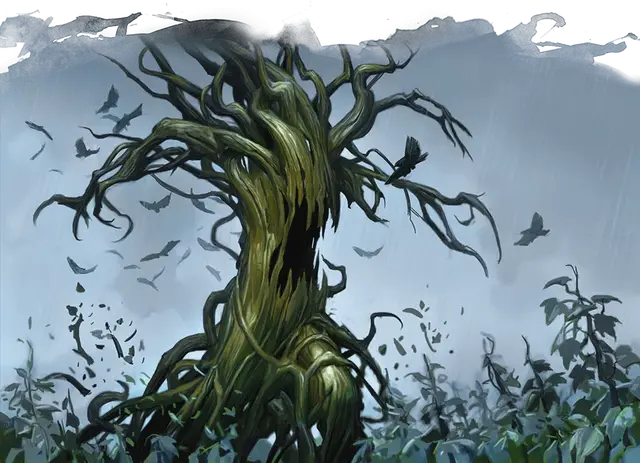

Древесная зараза
Tree Blight
Огромное Растение, нейтрально-злое

Класс Доспеха 15 (природный доспех)
Хиты 92 (8к12 + 40)
Скорость 30 футов
| мод | спас | ||
|---|---|---|---|
| СИЛ | 23 | +6 | +6 |
| ЛОВ | 10 | +0 | +0 |
| ТЕЛ | 20 | +5 | +5 |
| мод | спас | ||
|---|---|---|---|
| ИНТ | 6 | −2 | −2 |
| МДР | 10 | +0 | +0 |
| ХАР | 3 | −4 | −4 |
Иммунитет к состояниям ослепление, глухота
Чувства слепое зрение 60 футов (Слепа за пределами этого радиуса), пассивное Восприятие 10
Языки понимает Общий и Друидический, но не говорит
Опасность 7 (2900 опыта)
Бонус мастерства +3
Особенности
Обманчивая внешность. . Если зараза неподвижна в начале боя, он имеет преимущество в броске инициативы. Более того, если существо не наблюдало за движением или действием заразы, это существо должно преуспеть в проверке Интеллекта (Расследование) Сл 18, чтобы определить, что зараза одушевлена.
Осадный монстр. . Зараза наносит двойной урон объектам и зданиям.
Действия
Мультиатака. . Зараза совершает одну атаку Ветвью и одну Опутывающими корнями
Укус. . Рукопашная атака оружием: +9 к попаданию, досягаемость 5 футов, одна цель. Попадание: 19 (3к8 + 6) колющего урона.
Ветвь. . Рукопашная атака оружием: +9 к попаданию, досягаемость 15 футов, одна цель. Попадание: 16 (3к6 + 6) дробящего урона.
Опутывающие корни. . Рукопашная атака оружием: +9 к попаданию, досягаемость 15 футов, одно существо, ещё не захваченное Заразой. Существо схвачено (вырваться Сл 15). Пока существо не вырвалось из захвата, оно получает 9 (1к6+6) дробящего урона в начале своего каждого хода. Корни имеют КД 15 и могут быть отрезаны, если им нанесут 6 или более рубящего урона за один раз. Отрезание корня не наносит урона Заразе, однако заканчивает захват.
Бонусные действия
Укус. Рукопашная атака оружием: +9 к попаданию, досягаемость 5 футов, одно существо схваченное Заразой. Попадание: 19 (3к8 + 6) колющего урона.
Описание
Заразы (как описано в «Бестиарии») являются злыми, ходячими растениями, среди которых древесная зараза выделяется особо большим размером. Она выглядит как мёртвое дерево или трент, 30 футов высотой, с пористой, древесной плотью, колючими ветвями и гибкими корнями, выглядящими как хвост. Вместо соков она сильно напитана кровью и потому не станет быстро загораться.
Плотоядная злоба. Древесная зараза питается теплокровными жертвами и получает извращённое удовольствие, учиняя кровавые сцены. Она наносит удары своими тяжёлыми ветвями и давит жертв насмерть своими корнями. Она может широко разинуть свой, наполненный зубами, рот и укусить существо, пойманное в его корни. Корни древесной заразы можно отрубить, что впрочем не наносит самой заразе никакого урона.
Враждебность к заразам. Древесные заразы часто сражаются вместе с другими видами зараз, но они ненавидят других древесных зараз и при каждом представившемся случае будут атаковать их. Древесные заразы также ненавидят трентов, на что те им отвечают лютой взаимностью.